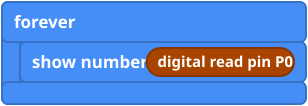
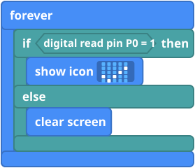
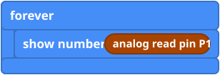
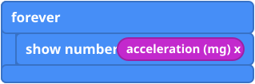

What it is
A sensor is a part that measures something and tells the micro:bit with a number. Some give just 0 or 1 (on or off). Others give a whole range of numbers.
| Part | Kind | It tells you |
|---|---|---|
| PIR sensor | On or off | 1 when something warm, like you, moves nearby. |
| Crash sensor | On or off | Whether it is being pressed right now. |
| Potentiometer | A range | How far the knob is turned, from 0 to 1023. |
| Soil moisture sensor | A range | How wet the soil is, as a number. |
| ADKeypad | A range | One pin, and each key gives a different number. Use "show it" (below) to find them. |
| Built in: tilt, temperature, light | A range | No wires needed. Just use the blocks. |
Plug the part into a pin (see Pins) and read it with the block that matches its kind. The OLED screen needs a MakeCode extension, which the Tinkercademy tutorials explain.
The blocks
digital read pin and analog read pin are in Pins, under Advanced. The built-in ones are in Input.


Mini examples




Try this
- Find out what the PIR reads when you stand still and when you wave.
- Make a heart appear when the PIR sees you.
- Find the numbers for dry and wet soil, then make a face that is sad when dry.
- Tilt the micro:bit to find which way is a negative number.
Common mistakes
- The number is always 0 or always 1023. Check the pin number. A part that gives a range works best on pin 0, 1 or 2.
- The PIR reacts at strange times. It can need up to a minute after power-on to settle. Wait, then test.
- Light level says 0 at first. Read it again after a moment.
- The reading jumps around. Nothing is connected to that pin, or the cable is loose. If it still jumps, add a set pull block (in Pins, under "... more") in on start to hold the pin steady.
The code in words
JavaScript: pins.digitalReadPin(DigitalPin.P0)
pins.analogReadPin(AnalogPin.P1)
input.acceleration(Dimension.X)
Python: pins.digital_read_pin(DigitalPin.P0)
pins.analog_read_pin(AnalogPin.P1)
input.acceleration(Dimension.X)
V1 and V2
These blocks work on both. The light level block uses the LED lights as a light sensor, so it works best when the lights are not showing a picture.
Teacher notes
- Time: 40 to 60 minutes. Each sensor can be its own short activity.
- Ideas covered: measuring, digital versus analog, and finding a good threshold by testing.
- Check on your kit: what each part reads (1 or 0) differs between sensors, which is why the "show it" trick is useful.
- The block pictures are simplified drawings. Check the real blocks in MakeCode.